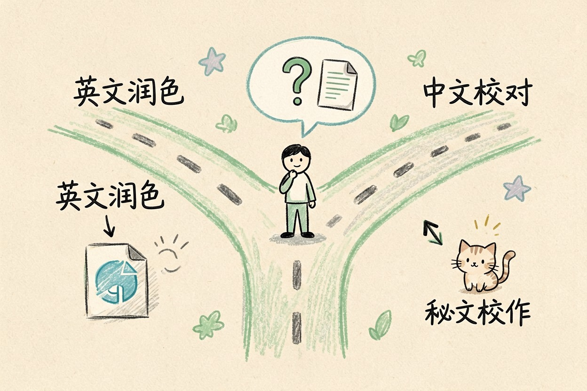
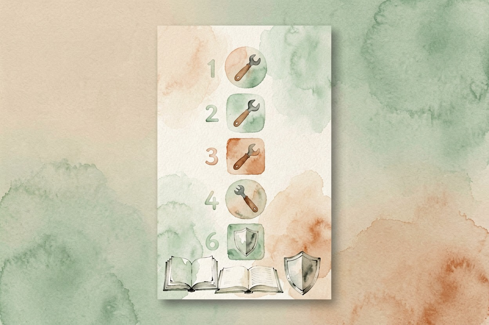

Grammarly 替代品：中文用户更省钱的选择
先分清你改的是中文还是英文，再决定用哪款替代。英文润色、中文校对各有免费工具，日常都够用。
Grammarly 替代品怎么选：先分清两种需求

Grammarly 替代品怎么选，答案不是一张排行榜。中文用户问 grammarly替代品，多半把两类需求混在一起。先分清两种需求：改中文，还是改英文。
英文稿子丢给 LanguageTool、DeepL Write。中文稿子丢给秘塔写作猫、火山写作。Grammarly 免费版日常写邮件够用。会员值不值，另算。
朋友小林去年开了 Grammarly 会员，一个月只用三次。他后来换回免费版，英文邮件照样写完了。多数人缺的不是付费功能。缺的是分清自己在改哪种文字。
关键要点 - 英文润色优先看 LanguageTool、DeepL Write - 中文校对用秘塔写作猫、火山写作- Grammarly 免费版日常够用，会员按频率判断- grammarlycn.cn 等「中文站」都是仿冒，别下载别付款
先算笔账：Grammarly 免费版和会员差在哪
Grammarly 免费版能查语法、拼写和标点。浏览器插件随处可用。高级改写、语气调整、重复检测要会员。
会员年付折合人民币不便宜，价格随时变。掏钱前去Grammarly 官网{:target="_blank"}定价页看一眼。
判断值不值，别听别人的说法。按自己的频率算。一周写两三封英文邮件，免费版足够。天天写英文报告和论文，才轮到会员上场。
先算这笔账，grammarly替代品和会员哪个值，就有数了。把年费除以每月真正用高级功能的次数。数字自己会说话。
英文用这两款，中文用这两款
英文场景的 grammarly替代品，LanguageTool 和 DeepL Write 最接近原版体验。LanguageTool 支持二十多种语言，免费版能查语法和拼写，也有浏览器插件。免费额度以官网当前说明为准（LanguageTool 官网{:target="_blank"}）。
DeepL Write 专注改写润色，重写句子、调整语气都行。预算只够装一款，先装 LanguageTool。
中文场景别找英文工具硬凑。中文错别字、标点、语病，看秘塔写作猫的校对能力。
扩写缩写和语气调整，看火山写作的免费改写功能。中文需求不算 grammarly替代品，属于另一类工具。两类工具不冲突，各自干各自的活。
用下面这段提示词，把英文段落交给任何一款工具试：
帮我把下面这段英文检查一遍：
1. 只改语法、拼写和标点，别改我的原意；
2. 用中文说明每一处改了什么、为什么；
3. 最后给一版修改后的完整段落。
原文：（粘贴你的英文）按需求直接选：四种场景对照
| 场景 | 建议工具 | 要不要付费 |
|---|---|---|
| 英文邮件 | Grammarly 免费版 / LanguageTool | 一般不用 |
| 英文论文润色 | DeepL Write / LanguageTool | 看频率 |
| 中文汇报校对 | 秘塔写作猫 | 免费够用 |
| 中文自媒体改写 | 火山写作 | 免费够用 |
拿一段带典型错误的短文，把候选工具各试一遍。看哪款改得让你舒服。判断 grammarly替代品最快的办法，就是拿自己的稿子试。
一个必须提醒的事：仿冒站和涉密内容
grammarlycn.cn 这类「Grammarly 中文站」全是仿冒镜像，不是官方。教程互相抄，还可能诱导付款。只认官网 grammarly.com，任何「中文汉化版」「破解版」都不要下载登录。搜 grammarly替代品时，别点进任何「中文站」。
别把涉密内容或未发表的论文粘贴到任何云端检查工具。线上工具都经第三方服务器，数据离开你手就难说。学术成果的安全，比省几十块钱重要。选 grammarly替代品前，先把这条记牢。

本文信息核对于 2026-08-06。AI 产品的价格、免费额度与功能变动频繁，实际以各工具官网当前说明为准。